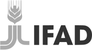

Amplificamos las voces democráticas en la era de la IA
Ayudamos a las organizaciones cívicas a ser más influyentes y resilientes—para que la democracia también lo sea.
Por qué ahora
La democracia está en retroceso, pero podemos cambiar el rumbo
Un gobierno representativo, responsable y digno de confianza no se renueva por sí solo. Depende de personas y organizaciones con las ideas, la capacidad y las herramientas necesarias para hacer real el poder democrático.
La democracia está bajo presión. Freedom House y V-Dem documentan un retroceso global sostenido de los derechos políticos, las libertades civiles y la gobernanza democrática que se está acelerando. El espacio cívico se reduce, la confianza pública se erosiona y las instituciones tienen dificultades para responder a un mundo más rápido y fragmentado.
Las organizaciones que hacen posible la democracia en todo el mundo están siendo restringidas. Las organizaciones cívicas ayudan a las personas a organizarse, expresarse, resolver problemas, construir comunidades y exigir cuentas al poder. Sin embargo, la contracción repentina de la asistencia para la democracia obliga a muchas a reducir personal, suspender programas o cerrar, como detalla el informe When Aid Fades. El financiamiento disminuye justo cuando la colaboración transfronteriza y la acción cívica enfrentan crecientes restricciones.
El entorno informativo recompensa la manipulación. Las tácticas autoritarias no se limitan a los gobiernos autoritarios: cualquier actor puede utilizar la tecnología y la IA para confundir, dividir o fabricar una apariencia de apoyo público. Los espacios digitales están más manipulados que nunca, dificultando que voces democráticas creíbles lleguen a las personas y ganen su confianza.
El futuro está en nuestras manos. Sabemos más que nunca sobre cómo participa la gente, cómo se construye la confianza, cómo las redes generan poder y cómo la tecnología puede reducir las barreras a la acción. New Democracy Studio reúne esos conocimientos con experiencia práctica: genera ideas, convoca a quienes pueden fortalecerlas y pone a prueba programas que ayuden a la democracia a evolucionar.
Ideas y encuentros
Generamos y promovemos nuevos enfoques para la democracia en la era de la IA
New Democracy Studio crea espacio para perspectivas críticas y oportunas que pueden cambiar cómo actores clave entienden los desafíos para la democracia—y qué hacer a continuación.

Desarrollamos y publicamos análisis en la intersección de la democracia, la tecnología y el entorno informativo; reunimos a personas alrededor de las preguntas que esos análisis plantean y buscamos ideas que puedan ponerse a prueba en la práctica.
Expertos, académicos, funcionarios públicos, líderes del sector privado y actores cívicos se reúnen para ayudarnos a cuestionar supuestos, comparar experiencias entre sectores y países, y descubrir posibilidades difíciles de encontrar en soledad.
Los encuentros nos permiten generar y poner a prueba ideas.
Programas
De las ideas a un mayor impacto democrático
Nuestros programas desarrollan capacidades prácticas, relaciones más sólidas y enfoques que pueden probarse en contexto, mejorarse y ampliarse.
DEMOCRACY+AI
Aprende a usar la IA para la democracia
Formación práctica, cohortes y apoyo organizacional para actores y equipos cívicos que quieren desarrollar capacidades con IA.
Explora Democracy+AI →Una nueva estrategia para el entorno informativo
Más información pronto...Nosotros
New Democracy Studio genera ideas informadas por la práctica
Por qué un studio
Práctico. Reflexivo. Centrado en las personas.
El Studio reúne ideas, debate y experimentación en un mismo proceso. Ponemos a prueba nuestros supuestos con una red global de aliados y desarrollamos enfoques que puedan mejorarse y compartirse.
01Ideas
→Definir el desafío y abrir posibilidades.
02Encuentros
→Cuestionarlas, conectarlas y ponerlas a prueba.
03Programas
El aprendizaje alimenta la siguiente ideaPoner las ideas en práctica—luego mejorarlas y ampliarlas.
Adam Fivenson
Chief Democracy Officer
Después de dos décadas trabajando en tecnología, asuntos globales y apoyo a la democracia, he aprendido que la democracia depende de que las personas sepan que tienen el poder de construir su propio futuro. Las organizaciones cívicas hacen real ese poder: ayudan a las personas a organizarse, expresarse, resolver problemas y exigir cuentas.
Organizaciones que han confiado en su trabajo


Publicaciones y apariciones seleccionadas
Artículos, entrevistas y podcasts
The global strategy behind political polarizationTVP World · 9 jun 2026 · Invitado↗
 The Past, Present, and Future of the US Information Integrity FieldTech Policy Press · 16 nov 2025 · Invitado↗
Big Tech and the future of democracyTVP World · 16 sep 2025 · Invitado↗
The Past, Present, and Future of the US Information Integrity FieldTech Policy Press · 16 nov 2025 · Invitado↗
Big Tech and the future of democracyTVP World · 16 sep 2025 · Invitado↗
 Stronger Together: Coalitions as a Catalyst for Information IntegrityNational Endowment for Democracy · 12 nov 2024 · Editor↗
Protecting freedom of speech: The Anatomy of DisinformationTVP World · 25 sep 2024 · Invitado↗
Stronger Together: Coalitions as a Catalyst for Information IntegrityNational Endowment for Democracy · 12 nov 2024 · Editor↗
Protecting freedom of speech: The Anatomy of DisinformationTVP World · 25 sep 2024 · Invitado↗
 How Iran and Russia use AI to spread disinformationWashington Post · 19 ago 2024 · Investigación citada↗
Manufacturing Deceit: How Generative AI Supercharges Information ManipulationNational Endowment for Democracy · 18 jun 2024 · Editor↗
Deepening the Response to Authoritarian Information Operations in Latin AmericaNational Endowment for Democracy · 28 nov 2023 · Editor↗
How Iran and Russia use AI to spread disinformationWashington Post · 19 ago 2024 · Investigación citada↗
Manufacturing Deceit: How Generative AI Supercharges Information ManipulationNational Endowment for Democracy · 18 jun 2024 · Editor↗
Deepening the Response to Authoritarian Information Operations in Latin AmericaNational Endowment for Democracy · 28 nov 2023 · Editor↗
 Shielding DemocracyCognitive Crucible · 10 oct 2023 · Invitado↗
How Russia turned America’s helping hand to Ukraine into a vast lieWashington Post · 29 mar 2023 · Investigación citada↗
Shielding Democracy: Civil Society Adaptations to Kremlin Disinformation about UkraineNational Endowment for Democracy · 22 feb 2023 · Autor↗
Shielding DemocracyCognitive Crucible · 10 oct 2023 · Invitado↗
How Russia turned America’s helping hand to Ukraine into a vast lieWashington Post · 29 mar 2023 · Investigación citada↗
Shielding Democracy: Civil Society Adaptations to Kremlin Disinformation about UkraineNational Endowment for Democracy · 22 feb 2023 · Autor↗
 One Year Later, Lessons from Ukraine in Fighting DisinformationJust Security · 21 feb 2023 · Autor↗
One Year Later, Lessons from Ukraine in Fighting DisinformationJust Security · 21 feb 2023 · Autor↗
 Artículos de Adam FivensonICTworks · 2017–2022 · Autor↗
Artículos de Adam FivensonICTworks · 2017–2022 · Autor↗
 Using human-centered design to shape foreign aid programsThis is HCD · 3 jul 2018 · Invitado↗
Using human-centered design to shape foreign aid programsThis is HCD · 3 jul 2018 · Invitado↗

Contacto
Hablemos
Cuéntanos sobre un desafío, una idea emergente o un equipo listo para desarrollar nuevas capacidades.